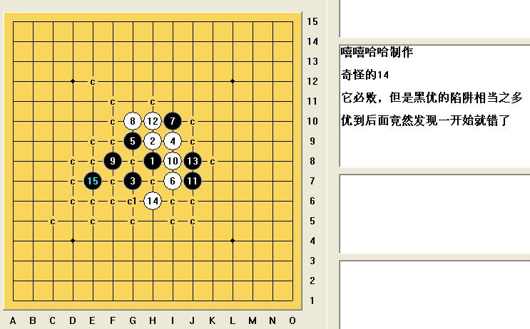

斜月怪14必败.rar
斜月怪14必败.rar这个14是“就是爱玩”发在星月阁专区的疑问，我一开始轻视了他，觉得这个14从来没人下，绝对必败了。结果回头一打地毯，发现黑棋被自己的优势骗得很厉害，经常是优优优优到后面就没棋了！回头一看，发现老早就出错了。。。看来这个14还是很有学问滴

［ 茗弈小刀 于 2009-4-20 17:45:08 时奖励此帖[金币加 20 威望加1］
［ 岳麓小棋后 于 2009-4-20 17:48:47 时花20金币送鲜花一朵］
［ 茗弈小刀 于 2009-4-20 17:49:58 时花20金币送鲜花一朵］
［此帖子已被 茗弈小刀 在 2009-4-22 19:01:38 编辑过］